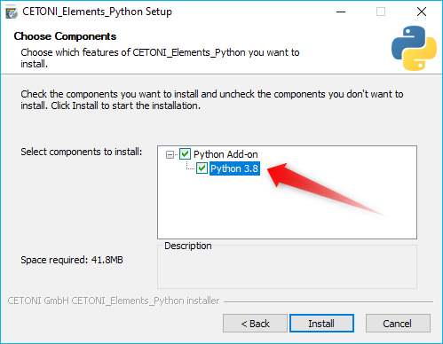

Python Add-on

Introduction to Python Add-on
Attention
The CETONI Elements Python Add-on allows you to control and automate processes using Python scripting language. Check the created scripts/programs as well as parameter entries before you execute them for the first time! CETONI assumes no liability for direct and/or indirect damage to your system or external hardware and software components caused by the scripts/programs you have created or by the use of parameters that are not suitable or unfavorable for your specific application.
The Python add-on allows you to execute Python code in CETONI Elements scripts via a corresponding script function. It thus provides an easy way to include the Python scripting language in your CETONI Elements scripts.
The embedded Python interpreter offers the same functionality as an execution of Python scripts via python command. I.e. if you install libraries via pip for the Python version used by the add-on, the functions of these Python libraries are also available in CETONI Elements.
This gives you many additional possibilities such as accessing and parsing files, accessing databases, TCP/IP network communication via Python sockets or using complex analysis functions implemented in Python.
Installation
The Python add-on is not included in the standard installation package, but must be installed additionally as an add-on. The versions of the Python add-on and the installed CETONI Elements software should match. For example, if you want to install the Python add-on with version number 20220126, the CETONI Elements software 20220126 should be installed.
Important
The version number of the CETONI Elements software and the Python add-on should match. The version number of the Python add-on must never be greater than that of the CETONI Elements software. The greater the difference between the version numbers, the greater the risk of problems and errors.
For installation, run the file CETONI_Elements_Python_64bit_Setup.exe.
The installation wizard will then guide you through the installation of
the software.

To use the Python add-on, a suitable Python 64-bit version must be installed on your computer. In the installation step Choose Components you can see the required version (here e.g. Python 3.8) and select it for installation if it is not yet available on your computer.
Important
On Windows, you must be logged in with administrator privileges to install the add-on, as it is installed for all users.
Important
The installed Python version must match the version specified in the installer. The plugin will not work correctly with other versions.
Python Console
Overview of Python Console
The Python add-on has a Python console that allows you to interactively enter and execute Python code similar to the standard Python console. You can show the Python console from the main menu ():

In the Python console, you can try out commands, test access to objects, and it helps you debug problems. If function calls work in the console, you can use them in your script.
Context Menu of Python Console
The context menu of the Python console contains the usual commands for text editing:

To delete the contents of the console, select Clear ❶ in the context menu or click the trash can icon ❷ in the title bar.
Attention
Risk of malfunction or data loss ! Do not use the Python Console in a running experiment, process or during normal operation or productive use. Incorrect input or access to resources can possibly lead to a crash of the software.
Code completion
The Python console supports you during the typing with a simple code completion. I.e., if you have imported modules, then the code completion supports you with the source code editing by suitable suggestions, like you are used to it from other code editors.

In the example above all functions from the cetoni_elements
module were imported. After entering ScriptEnv.get, matching functions
for the ScriptEnv object are displayed that start with get.
Error messages
Errors that occur when executing code in the Python console, as well as errors that occur when executing Python code in the Python script function, are displayed to you as red text in the Python console.

Python Modules
Import standard modules
The plugin uses a standard Python installation and thus has access to
all standard Python modules or to other modules installed via pip. You
can import a module as usual using the import statement. In the
following example the time module is imported and used:

Import custom modules
If you use your custom modules that you want to distribute or ship with
your project, you can store them in the Scripts/Python subfolder of
your current project. This directory is added by the software to the
sys.path of the Python interpreter. For example, if you are working
in the PythonDev project, then the absolute path to this directory
would be:
C:/Users/Public/Documents/QmixElements/Projects/PythonDev/Scripts/Python
If you import the module sys in the Python console, then you can see
via sys.path that the above directory is in the import path.

To test the import functionality, create the hello.py file
in the above folder with the following content:
def helloworld():
print("hello world")
You can now import this module and use the helloworld function:

Accessing application objects
The cetoni_elements module
The software adds a module cetoni_elements to the Python interpreter,
which can be used to access application objects. After importing the
module via from cetoni_elements import * you can access these
objects. The ScriptEnv object is the central object for accessing
available devices and application objects.
Note
See API Reference for a detailed description of the ScriptEnv object.
The following image shows how to import the cetoni_elements module
and then call the help() function of the ScriptEnv object:

Display properties and methods of objects
Using the Python function dir(object) you can display all methods and
properties of application objects. For example, you can use it to
display all the functions and properties of the ScriptEnv object.

Alternatively, all application objects also have a help()
function that provides a clearer display of an object’s properties and
methods. In the figure below you can see the call of ScriptEnv.help().
The console shows the Properties ❶ and methods (Slots ❷) of the
ScriptEnv object:

Tip
Use the dir(object) and Object.help()
functions to get an overview of the methods and
properties of a given object.
Using device objects
You can access device objects using the ScriptEnv.getDevice()
function. To get an overview of available device names you can call the
ScriptEnv.getDeviceNames() function.

The code completion helps you to enter a device name by
showing you a list of matching names (see figure above). If you call the
getDevice() function without an assignment to a variable, then you can
see in the console if the call was successful:
py> ScriptEnv.getDevice("Nemesys_S_1")
CNemesys4Pump (QtLabb::CNemesys4Pump at: 0x000002402DDCBF20)
To access a device, assign the result of the call to getDevice() to a
variable. In the following example, we assign the device object for the
first Nemesys S pump to the variable pump:
py> pump = ScriptEnv.getDevice("Nemesys_S_1")
Now you can use the dir(pump) and pump.help() functions to get an
overview of the available methods and functions of the pump object.
Tip
Use the dir(object) and Object.help()
functions to get an overview of the methods and
properties of device objects.
Important
For many devices, accessing device
properties and methods or displaying help via
Object.help() is only possible if the application is
connected to the devices.
Attention
Risk of malfunction / data loss ! Via device functions you may have access to functions that are not available in the graphical user interface. Always test functions outside running processes and not during productive use. Incorrect input or access to resources, methods or properties can lead to malfunctions or a crash of the software.
When you are connected to the device, you can now access the device functionality via the device object functions. For example, you can trigger a refill process for the pump:
py> pump.refillSyringe()
or stop the pumping operation:
py> pump.stopPumping()
The following code shows how to import the cetoni_elements module, get
the device object for the Nemesys S pump via the ScriptEnv object, and
then start an emptying process of the syringe:
py> from cetoni_elements import
py> pump = ScriptEnv.getDevice("Nemesys_S_1")
py> pump.emptySyringe()
Using application objects
Similar to device objects, you can also access application objects that
are no devices. Use the two functions ScriptEnv.getObject() and
criptEnv.getObjectNames() for this
The following code shows how to import the cetoni_elements module, get
the application object of the graphical logger via the ScriptEnv
object and then start logging:
py> from cetoni_elements import *
py> plot = ScriptEnv.getObject("ProcessDataGraph")
py> plot.startLogging()
Tip
Use the dir(object) and Object.help()
functions to get an overview of the methods and
properties of application objects.
Attention
Risk of malfunction / data loss ! The functions of the application objects may give you access to functions that are not available in the graphical user interface. Always test functions outside running processes and not during productive use. Incorrect input or access to resources, methods or properties can lead to malfunctions or a crash of the software.
Python Script Function - Execute Python Code
Python Script Functions Overview

The Python plugin adds the Execute Python Code script
function to the Core Functions category of the Script Pool:

This function allows you to execute Python code in the script
system of the application. When you insert the function into your
script, you will see the initial Python script in the configuration
area. This script contains the two functions script_exec() and
script_abort():
# Implement your script logic in this function
# Avoid blocking function calls
def script_exec():
return
# Implement your clean up code here in case of script stop
# Stop pending actions, clean up resources
# Keep execution time of this function short and do not use
# any blocking function calls
def script_abort():
return
When the script is executed, it is loaded by the Python
interpreter as a separate module and then the script_exec() function
is called. I.e. this function is the main function of the script and the
logic should be implemented there.
Tip
All options you have in the Python console to access device objects and application objects are also available in the script function.
The Python interpreter can only execute one Python script at a time. Parallel execution is not possible. If you use Python scripts in parallel sequences, then the scripts are executed one after the other, i.e. a parallel execution branch blocks until the execution of a script in another branch is completed. This is another reason why you should keep the execution time of scripts as short as possible. If you use non-blocking Python scripts with short execution times, “almost-parallel” execution in parallel sequences is possible.
Important
Parallel execution of multiple Python functions is not possible. If Python scripts are used in parallel sequences, they are executed one after the other.
Python Script Editor
The Python Script function has a Python code editor to assist you in writing Python code.

The editor has the following features
Syntax highlighting for Python code ❶
a simple code completion
Code Folding ❷
Line numbers ❸
Undo / Redo functionality ❹
Some functions of the editor are available via the context menu, other functions are available via keyboard shortcuts. Here are some of the functions:
Action |
Keyboard Shortcut |
|---|---|
Increase font size |
Ctrl + + |
Decrease font size |
Ctrl + - |
Reset font size to default |
Ctrl + 0 |
Indent selected code block |
Tab |
Unindent selected code block |
Shift + Tab |
Undo |
Ctrl + Z or context menu |
Redo |
Ctrl + Y or contexte menu |
Important
Editing the Python source code is only possible when the script is not running. Once the script has been started, editing of the source code is disabled. In case of an error you have to terminate the script via the Terminate Script button before you can edit the Python code.
Handle script termination - script_abort()
If the running script is terminated via the Terminate Script button of
the Script Editor (see figure below), then the execution of
script_exec() is interrupted and the script_abort() function is
executed:

In case of such an abort, you will see a corresponding error message in the Python console:

If you want to act on the abort of the script, e.g. to
release resources or to inform the user, you can do this in the
script_abort() function. If you want to access data or objects (e.g.
file handles, sockets or similar) in the script_abort() function
which you have used before in the script_exec() function, you can do
this via global variables. The following script shows a corresponding
example. The script_abort() function outputs the number of loop cycles
that were executed before the script was aborted. Both functions access
the global variable counter:
import time
counter = None
def script_exec():
global counter
for i in range(1000):
counter = i
print(i)
time.sleep(1)
return
def script_abort():
global counter
print("script_abort() after ", counter, " loops")
return
Implementation of the function logic in script_exec()
When implementing the script in script_exec() you should be careful
not to use blocking functions or blocking waits. The Python interpreter
can be interrupted via the Terminate Script button only after the
execution of the current Python statement. If the current statement is a
blocking function call, e.g. time.wait(10), the interpreter can only
be interrupted after 10 seconds when the wait call has finished.
Therefore, always add a timeout to blocking function calls.
Important
Do not use blocking function calls to avoid blocking termination of script execution. Always add a timeout to blocking function calls.
In the following example, the call to socket.recv() in line 8 is
blocking. I.e. the call returns only when data has been received. As
long as no data is received, the function blocks and the script cannot
be aborted cleanly:
import socket
def script_exec():
HOST = '127.0.0.1' # The server's hostname or IP address
PORT = 65432 # The port used by the server
with socket.socket(socket.AF_INET, socket.SOCK_STREAM) as s:
s.connect((HOST, PORT))
data = s.recv(2048)
return
To fix this problem the call to socket.recv() should have a timeout.
This has been implemented in the following example using the
socket.settimeout() function:
import socket
def script_exec():
HOST = '127.0.0.1' # The server's hostname or IP address
PORT = 65432 # The port used by the server
with socket.socket(socket.AF_INET, socket.SOCK_STREAM) as s:
s.connect((HOST, PORT))
s.settimeout(0.5)
try:
data = s.recv(2048)
except socket.timeout as err:
print(err)
return
Script execution errors
If errors occur during the execution of a script, you will see them in the Event Log and in the Python console. If you hover over the error message in the event log, you will see a hint window with details:

In the Python console, the error message is displayed to you as red error text:

In the error message you will also get the information in which line of the script an error occurred. This will help you to find and fix the error in the script editor.
Important
Editing the Python source code is only possible when the script is not running. Once the script has been started, editing of the source code is disabled. In case of an error you have to terminate the script via the Terminate Script button before you can edit the Python code.
Using custom modules
If your script contains very complex and extensive logic, you may want
to offload the code to an external module and include it using the
import functionality (see section Import custom modules). You can then call
the functions of the imported module from within script_exec().
In the following example we import our own module hello and call its
function helloworld().
import hello
def script_exec():
hello.helloworld()
return
The output of the script appears both in the event log:

and in the Python console:

If you make changes to the external module after the module
has already been imported, then these changes will not be available in
your Python script in the application. This is the normal way the Python
interpreter works - once a module has been imported, it will not be
imported again. As a test, add the hellouniverse() function to your
own hello module:
def hellouniverse():
print("hello universe")
Now call the new function from your application script. When running,
you will receive the information that the hellouniverse function is
not available.
To avoid restarting the application after changing the external module,
you can explicitly request a reload in your script using the reload()
function from the importlib module. To do this, modify your Python
script in the application as follows:
import hello
from importlib import reload
def script_exec():
reload(hello) # trigger explicit reload of hello module
hello.helloworld()
hello.hellouniverse()
return
The script is now executed without errors.
Tip
Use the importlib.reload() function
when making changes to external modules after you have
already imported them via import into your Python
script in the application.
Accessing script variables
To be able to pass the results of calculations in Python code to the
running script or to react to values from the script, it is necessary to
access script variables. To do this, import the cetoni_elements module
(see section The cetoni_elements module).
Once you have imported the module, you can access script variables using
the ScriptEnv.getVar(), ScriptEnv.setVar() and
ScriptEnv.setVars() functions. The following example shows how to read
the script variable $Flow, increment it by 2 and then store the
calculated value back into the script variable:
from cetoni_elements import *
def script_exec():
flow = ScriptEnv.getVar("$Flow")
print(flow)
flow = flow + 2;
ScriptEnv.setVar("$Flow", flow)
print(flow)
return
Important
Remember that script variables in
Python script always start with a dollar sign - $VarName.
Script variables can also be used to access devices. Script variables
can store device references. By reading the device reference and
assigning it to a Python variable, the device object can be accessed. In
the following example, the $Pump1 script variable contains a device
reference of the Nemesys_S_1 pump that was assigned to the variable in
the Create Variable function. The device reference is read from the
variable and assigned to the Python variable pump. Now device
functions can be accessed via the pump variable. In this example, the
syringe is emptied via pump.emptySyringe():
from cetoni_elements import *
def script_exec():
pump = ScriptEnv.getVar("$Pump1")
print(pump)
pump.emptySyringe()
return
It is also possible to create lists in Python and to store them in a
script variable. The following example creates a list of 4 values and
stores them in the script variable $Positions:
from cetoni_elements import *
def script_exec():
ScriptEnv.setVar("$Positions", [0, 3.5, 12, 7])
return
Instead of simple values, it is possible to create lists of devices and
store them in variables. In the following example a list is created
which contains the two digital inputs of the first Nemesys S pump.
This list is stored in the script variable $DigitalInputs.
from cetoni_elements import *
def script_exec():
di1 = ScriptEnv.getDevice("Nemesys_S_1_DigIN1")
di2 = ScriptEnv.getDevice("Nemesys_S_1_DigIN2")
ScriptEnv.setVar("$DigitalInputs", [di1, di2])
return
Example scripts
Barcode Scanner
The following example script shows how the camera support of CETONI Elements can be used to implement a barcode scanner using the pyzbar module:
1from pyzbar import pyzbar
2import time
3import qimage2ndarray
4from cetoni_elements import *
5
6# Main script function
7def script_exec():
8 barcode = None
9 camera = ScriptEnv.getObject('Qmix_CAM_1')
10 qimage = camera.capturedPreviewImage()
11 frame = qimage2ndarray.rgb_view(qimage)
12 barcodes = pyzbar.decode(frame)
13 for b in barcodes:
14 barcode = b.data.decode('utf-8')
15 break
16
17 # output
18 if barcode is not None:
19 ScriptEnv.setVar('$Barcode', barcode)
20 else:
21 ScriptEnv.setVar('$Barcode', 0)
22 return
By importing the cetoni_elements module, the CETONI Elements camera
can be accessed and an image can be captured:
camera = ScriptEnv.getObject('Qmix_CAM_1')
qimage = camera.capturedPreviewImage()
The qimage2ndarrays
module helps us to convert the captured image in QImage format into a
numpy.ndarray, which is required by the
pyzbar module.
frame = qimage2ndarray.rgb_view(qimage)
Now we can use the pyzbar module to decode the barcode:
barcodes = pyzbar.decode(frame)
for b in barcodes:
barcode = b.data.decode('utf-8')
break
In the last step the barcode is stored in the script variable $Barcode
with the function ScriptEnv.setVar() so that it is available in the
script and can be evaluated further.
if barcode is not None:
ScriptEnv.setVar('$Barcode', barcode)
else:
ScriptEnv.setVar('$Barcode', 0)
return
API Reference
ScriptEnv
The ScriptEnv object is the central object for accessing available
devices and application objects.
-
QStringList getDeviceNames() const
Returns a tuple with all device names that can be accessed from Python.
Use the device name when calling the
getDevice()function to get the corresponding device object.
-
QtLabb::Core::CDevice *getDevice(const QString &Name) const
Returns the device object for the given device name.
The device object provides access to device-specific functions and properties of this device. The device names are the names that are also used in the CETONI Elements script system to access devices or device properties.
Example:
pump = ScriptEnv.getDevice("Nemesys_S_1")
-
QStringList getObjectNames() const
Returns a list of all registered application objects that are not devices and that can be accessed from Python, such as the graphical logger.
-
QObject *getObject(const QString &Name) const
Returns the object with the given object name
Name.Example:
plot = ScriptEnv.getObject("ProcessDataGraph")
-
QVariant getVar(const QString &VarName) const
Returns the value of a certain script variable.
The variable name needs to start with a dollar sign.
Example:
flow = ScriptEnv.getVar("$FlowRate")
-
void setVar(const QString &Name, const QVariant &Value)
Sets the value of the script variable to the given value.
Example:
ScriptEnv.setVar("$TargetPos", 25)
-
void setVars(const QVariantMap Values)
Sets multiple script variables using a Python dictionary.
Example:
ScriptEnv.setVars({"$Value1" : 0.5, "$Value2" : 1.5})